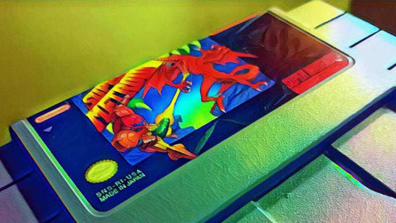

$ BaronBurdock
2022 08 01: SNES Cartridge Brain Dump

For most of my life the innards of my game cartridges were largely a mystery. You simply put these these magical chunks of plastic into your console and they worked…and if they didn't, you blew on them until they did. This post is essentially a brain dump about everything I have learned about SNES cartridges.I won't be going into too much detail on the PAL SNES and Super Famicom carts as at the time of writing I don't have any to rip open.
Design
Like practically every other cartridge out there, each SNES cartridge consists of 3 parts: two plastic shell pieces fastened together around circuit board housed inside. With the exception of unlicensed cartridges, the shapes of these shells comes in two forms: for lack of a better term, "flat fronted" and "indented fronted."The flat fronted cartridges were released earlier in the SNES' life and were designed to prevent the cartridge from being pulled out or ejected while the console is powered on. Probably due to repair issues from people breaking their SNESes ripping their cartridges out, Nintendo later revised the cartridge so that they can be released from the console with the power on. I can personally attest that this feature saved my SNES - I vividly remember not shoveling the driveway so I could play Zelda, only to have my Dad yank the cartridge from the console.
Unlike the colorful Famicom / N64 cartridges, unless you are holding an unlicensed cart or one of the carts lucky enough to have special colors, all SNES cartridges come in some form gray (or yellowed gray due to the chemicals used in the carts). To my knowledge only three licensed cartridges featured special colors:
Doom - Red
Maximum Carnage - Red
Killer Instinct - Black
For the record, I think Nintendo really dropped the ball not giving A Link to the Past a proper gold cartridge like the NES and N64 releases.
Inside the Cartridge
For the most part, the only exposure most people have with the actual board is looking at the bottom of the cartridge when blowing into it (again, don't do this, someday I will write a post about how to clean your cartridge). The only portion of the board visible are the cartridge without opening up the cartridge are the gold plated pins used to connect to the console. Depending on the game and whether it uses special chips or not dictates how many pins are used (46 or 62 pins). You can tell which cartridges use special chips if they have additional pins on the side.
To open up a SNES cartridge there are two special screws that need to be removed. In order to open, you will need to purchase a 3.8mm Security bit. these tools are relatively cheap and will allow you to open NES, SNES, N64, Virtual Boy, some Sega Genesis and Game Boy games. More often than not, these are often bundled with 4.5mm Security Bit, and together you can open up just about every retro cartridge. For some reason the heads on these screws always reminded me of the imperial crest from Star Wars.
Labels
As far as I'm concerned, those in North American were blessed with the best version of the Super Nintendo / Super Famicom cartridge. Unlike its Japanese and PAL cousins, the boxy North American SNES cartridge allows it to be stored on a shelf with the titles visible. No need to write the title on the top or print off special labels. From what I have come across, there are four varieties of SNES cartridge labels.
Made in Japan: These are high quality, high-gloss laminated labels - for my money these are the best quality labels you can find. If you are looking to buy a game and have the choice between a Made in Japan label and others, go with the Made in Japan version.
Made in Puerto Rico: These are also high-gloss laminated labels - as far as I can tell they are the same as the Japanese labels (only on later sports games from what I've seen)
Made in Mexico: I find these games to be the midway point between the Japanese/Puerto Rican labels and the Assembled in Mexico labels. They are glossy, but not nearly as nice as others. These are from games made late in the SNES life cycle after Nintendo shifted a lot of manufacturing to Mexico.
Assembled in Mexico: These are unlaminated Majesco releases (mostly re-releases). I find that they are low-quality and tear up easily. I've never been able to get writing out of them. In addition, these Majesco cartridges lack a back label and instead, the wording is molded into the cartridge. I avoid these if possible. At one point in time I had a whole blog post devoted to the Majesco releases (it was wiped out with my old computer). Maybe at some point I will return to this post and update things. Below is listing of every Majesco release that I have come across.
- Aaahh!!! Real Monsters
- Aladdin
- Animaniacs
- Battletoads & Double Dragon
- Battletoads in Battlemaniacs
- Beavis and Butthead
- Brunswick World Bowling: Tournament of Champions
- Championship Pool
- Clay Fighter
- Clue
- Contra III: The Alien Wars
- Disney's Goof Troop
- Disney's The Jungle Book
- Earthworm Jim 2
- Family Feud
- Frogger
- Jeopardy: Deluxe Edition
- Jungle Strike
- Jurassic Park
- The Lion King
- Mega Man X
- Monopoly
- Pac Man 2: The New Adventures
- Paperboy 2
- Pitfall: The Mayan Adventure
- Porky Pig's Haunted Holiday
- Scooby Doo Mystery
- Speedy Gonzales: Los Gatos Bandidos
- Spiderman and the X-Men in Arcade's Revenge
- Street Fighter II
- Super Battleship
- Super Black Bass
- Super Caesar's Palace
- Super Castlevania IV
- Super Star Wars: Empire Strikes Back
- Super Star Wars: Return of the Jedi
- Super Godzilla
- Super Off-Road
- Super Off-Road: The Baja
- Taz-Mania
- Teenage Mutant Ninja Turtles IV: Turtles in Time
- Terminator 2: The Arcade Game
- Timon and Pumbaa's Jungle Games
- Tiny Toon Adventures: Buster Busts Loose
- Tom and Jerry
- Top Gear
- Urban Strike
- X-Men: Mutant Apocalypse
- Wheel of Fortune: Deluxe Edition
- WWF Super Wrestlemania